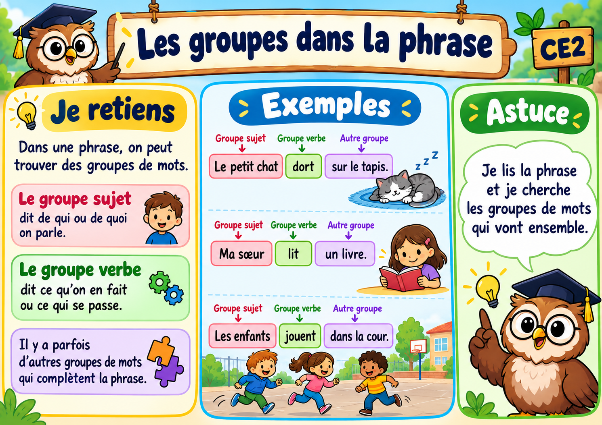

Je m’entraîne — Les groupes dans la phrase
Réussis les 10 exercices. Si tu te trompes, lis l’indice et réessaie.
Bravo ! Tu as réussi les 10 exercices.

Réussis les 10 exercices. Si tu te trompes, lis l’indice et réessaie.
Bravo ! Tu as réussi les 10 exercices.